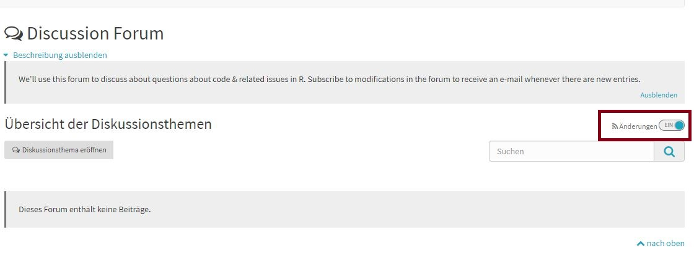
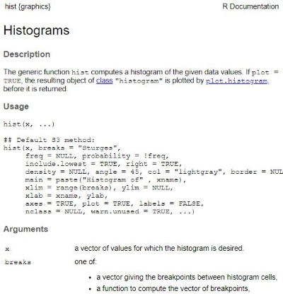

R for Conditional Process Analysis
2022-04-19
General information on the course
This online tutorial will accompany the seminar “Using Conditional Process Analysis to evaluate communication theories”, a B.A. Seminar at the IKMZ (University of Zurich, FS2022).
The course takes place via Zoom (Wednesday 10:15-11.45 am, ID: 645 8007 2506, password: lavaan). If you don’t want or can’t participate in this course from your home office, you can always visit the room AND-2-02 (Andreasstrasse 15, 8050 Zurich) during lecture hours. This is also a great opportunity to meet fellow students in person!
You can access all necessary information on the seminar’s syllabus, important dates and assessments/evaluations via OLAT. There, additional resources (e.g. Powerpoint slides, helpful book resources) are uploaded to the materials folder.
Special thanks
Very special thanks goes to Valerie Hase, as the first part of this tutorial is a very slightly adapted version of her highly recommendable Text as Data tutorial. You should definitely check out her work, too!
How to use this tutorial
After completing this tutorial, you will have acquired two important skills:
- Know how to use R and R studio to complete your data management.
- Know how to use R and R studio to do Conditional Process Analysis.
In the seminar, each session will consist of two parts. In the first part, we will look at communication theories and discuss relationships between communication variables. In the second part, you will work through this tutorial, the accompanying videos, and solve exercises together with fellow students. The tutorial is designed to provide the R skills that you need to put the seminar’s theoretical discussions into real-world practice. Beginners in R will work through the entire tutorial, while advanced users can skip individual chapters. The goal is to make the individual seminar sessions diverse and to advance your programming skills with as much ease and fun as possible.
Each tutorial includes
- introduction to new functions/analysis methods in R, including corresponding R code
- information on other tutorials/sources on how to learn these methods
- exercises which will help you understand and apply your new knowledge (you’ll work through these with your peers)
What can I do if questions arise?
Questions are always welcome!
Since you’ll be learning a lot of new things, it’s perfectly normal to have a lot of questions.
If you do not understand something in this tutorial, have questions about exercises, or just want some repetition during the Zoom seminar: Please do ask! The most important thing when learning R is to understand that it is completely normal to feel lost sometimes. Don’t worry - it’s highly likely that everyone else feels the same.
Therefore, it’s key that you ask questions. There are three channels through which you may pose question you have (preferably in this order):
- Our Zoom sessions: Wednesday, 10:15-11:45.
- The OLAT forum: Outside of those sessions, please use the OLAT forum to ask any questions. This way, every participant will be able to see your questions, provide answers and see my answers. Thus, everybody will be provided with the same information. I recommend you turn on notifications about new entries in the forum to be informed about ongoing discussions.
| Image: How to turn on notifications: |
|  |
- Email: If you have very specific questions about your own project etc. (or things you may not want to discuss with everyone in class), write me an email: l.kobilke@ikmz.uzh.ch.
What can I do if I have problems with my R code?
Besides asking a question during the seminar (see What can I do if questions arise?), there are some great places to have a look at when you encounter problems. I’ll cover them in the section Help?! in greater detail. To give you a head start, here’s a quick rundown of the three best places to look if you have a problem with your code:
- R’s integrated help function: Use the ?-function whenever possible. Let’s assume you struggle with creating a histogram for your data (
histfunction in R). You can open the R documentation of thehistfunction in R by writing:
?hist| Preview of ?hist in R: |
|  |
Search engines: Like Bing or Google. Yup, programmers and data scientists google all the time! Nobody knows all the code and errors by heart. Often you can find perfect answers to your questions on Stackoverflow, StatsExchange, or Rseek because other people had exactly the same problems. And more importantly, the communities on these websites are very friendly and helpful.
Packages’ reference manuals: Finally, problems with R packages (we’ll get to packages later, see: Packages) can often be solved by looking at their reference manuals (an overview document containing all of a package’s functions). For example, you can learn more about
dplyr(a data management package that we are going to use later in this tutorial) by visiting its reference manual on a website called “CRAN”: https://cran.r-project.org/web/packages/dplyr/dplyr.pdf.
That’s it. Let’s start with our first tutorial: Tutorial: Installing & Understanding R/R Studio